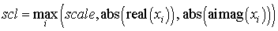

Intel® oneAPI Math Kernel Library Developer Reference - Fortran
Updates a sum of squares represented in scaled form.
call pslassq(n, x, ix, jx, descx, incx, scale, sumsq)
call pdlassq(n, x, ix, jx, descx, incx, scale, sumsq)
call pclassq(n, x, ix, jx, descx, incx, scale, sumsq)
call pzlassq(n, x, ix, jx, descx, incx, scale, sumsq)
The p?lassqroutine returns the values scl and smsq such that
scl 2 * smsq = x12 + ... + xn2 + scale 2*sumsq,
where
xi= sub(X) = X(ix + (jx-1)*m_x + (i - 1)*incx) for pslassq/pdlassq ,
xi= sub(X) = abs(X(ix + (jx-1)*m_x + (i - 1)*incx) for pclassq/pzlassq.
For real routines pslassq/pdlassq the value of sumsq is assumed to be non-negative and scl returns the value
scl = max(scale, abs(xi)).
For complex routines pclassq/pzlassq the value of sumsq is assumed to be at least unity and the value of ssq will then satisfy
1.0 ≤ ssq ≤sumsq +2n
Value scale is assumed to be non-negative and scl returns the value

For all routines p?lassq values scale and sumsq must be supplied in scale and sumsq respectively, and scale and sumsq are overwritten by scl and ssq respectively.
All routines p?lassq make only one pass through the vector sub(X).
(global) INTEGER.
The length of the distributed vector sub(x ).
REAL for pslassq
DOUBLE PRECISION for pdlassq
COMPLEX for pclassq
COMPLEX*16 for pzlassq.
The vector for which a scaled sum of squares is computed:
x(ix + (jx-1)*m_x + (i - 1)*incx), 1 ≤ i ≤ n.
(global) INTEGER.
The row index in the global matrix X indicating the first row of sub(X).
(global) INTEGER.
The column index in the global matrix X indicating the first column of sub(X).
(global and local) INTEGER array of size dlen_.
The array descriptor for the distributed matrix X.
(global) INTEGER.
The global increment for the elements of X. Only two values of incx are supported in this version, namely 1 and m_x. The argument incx must not equal zero.
(local).
REAL for pslassq/pclassq
DOUBLE PRECISION for pdlassq/pzlassq.
On entry, the value scale in the equation above.
(local)
REAL for pslassq/pclassq
DOUBLE PRECISION for pdlassq/pzlassq.
On entry, the value sumsq in the equation above.
(local).
On exit, scale is overwritten with scl , the scaling factor for the sum of squares.
(local).
On exit, sumsq is overwritten with the value smsq, the basic sum of squares from which scl has been factored out.